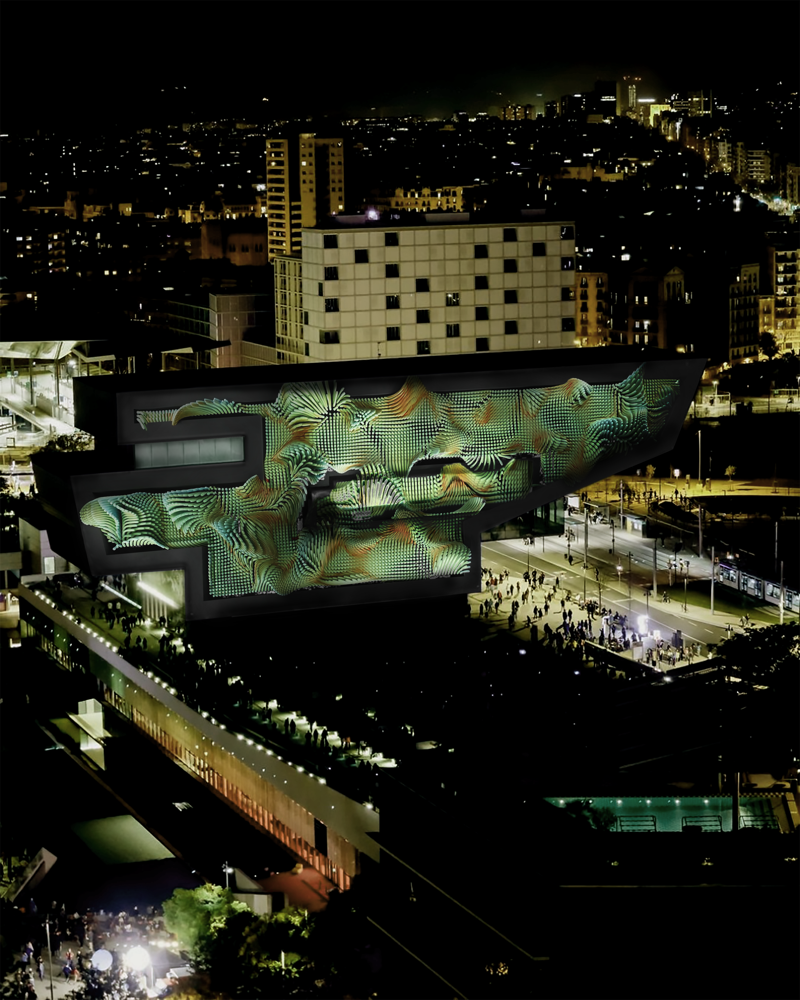
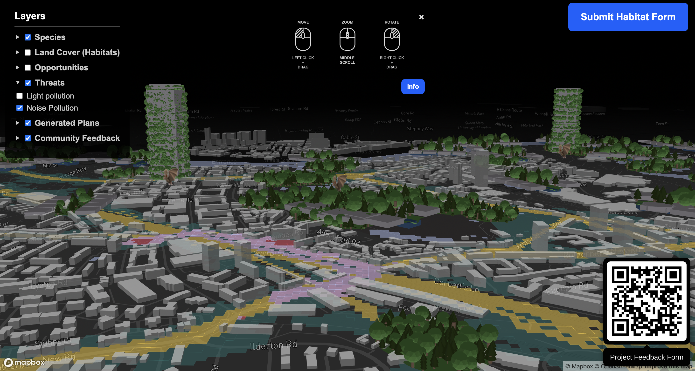
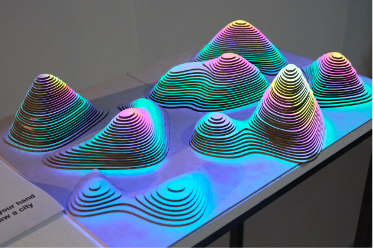
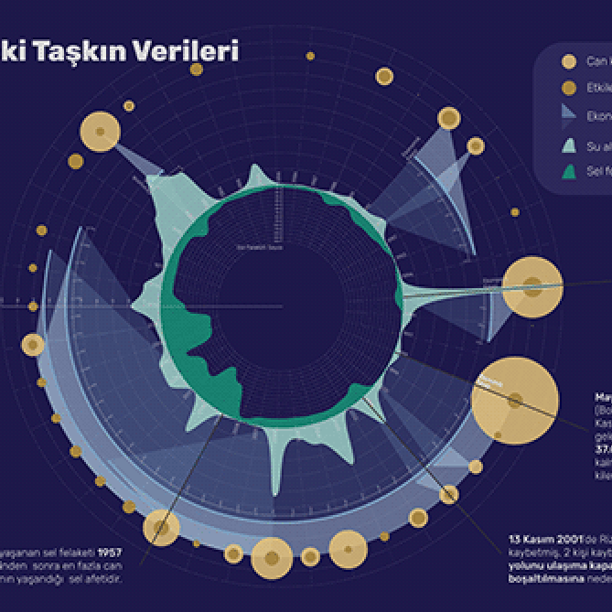
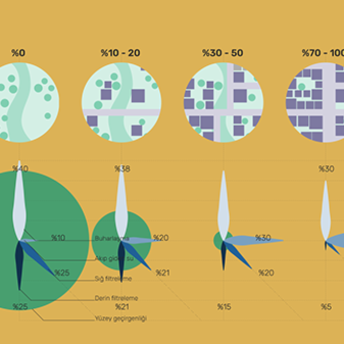
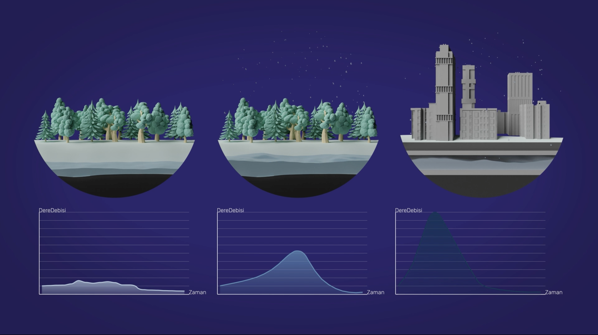

Coral Stories
Projection mapping project onto Dissney Hub, proposal submission for OFFF Barcelona 2026. Exploring the tension between the Anthropocene and the natural world.

Kin’o’polis
Speculative cartographic tool re-imagining London as a more-than-human city, modelling alternative city futures for the species that share it.


Emergence
Interactive 3D projection mapping installation. Viewers reshape a topography by hand and watch a city grow between natural forms, drawing out the parallels between urban expansion and organic growth.
Pytko Gig Sept ’25
Live audioreactive visuals for Julia Pytko's EP Release.


Pytko Gig June ’25
Live audioreactive visuals for Julia Pytko's Greyhound performance.
Umwelt
An interactive game installation exploring the world through other species, asking: is the world I want also ideal for another species?

Artemis
Pixel art game concept design inspired by Andy Weir's novel. Set in the lunar city of Artemis, it follows Jazz Bashara through a world built on the economics and politics of living off-world.

Hidden Streams of Ankara v1
Data visualisation on Ankara's buried rivers, tracing how they were diverted into sewage pipes for unplanned urban growth.



Hidden Streams of Ankara v2
3D infographic video on urbanization, lost rivers, and flash floods. A three-part video series unpacking why Ankara lost its rivers, and why that loss keeps costing the city in floods.